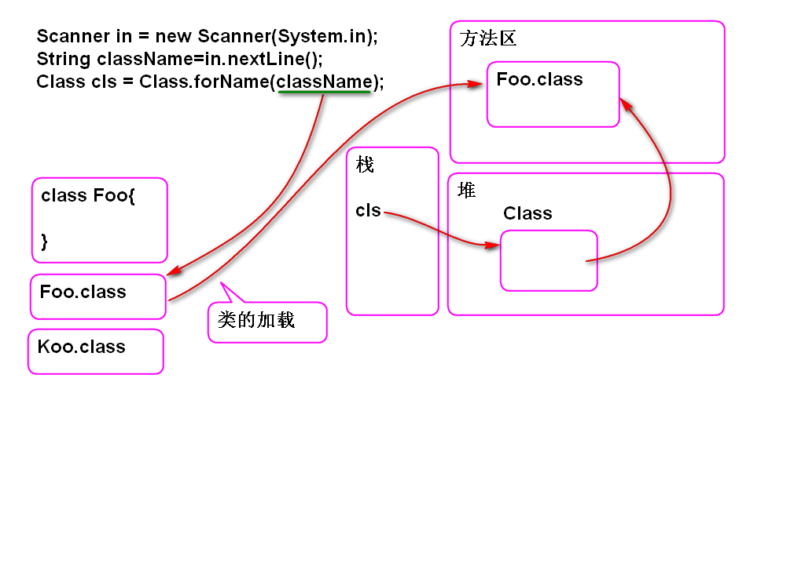

案例:
Foo foo = new Foo();
foo.test();
Java编译器编译的时候就将代码的执行次序确定下来, 运行期间按照编译时候确定的执行次序, 顺序执行.
程序在运行期间动态的决定创建那个对象, 执行那个方法
利用反射API可以实现Java的动态执行.
问题: 执行某个类的全部以test为开头的方法.(未卜先知)
动态将类加载到内存方法区:
Class cls = Class.forName(类名)

在不知道类名的情况下创建对象.
Object obj = cls.newInstance();
自动调用cls代表类的无参数构造器,创建一个对象. 如果cls代表的类没有无参数构造器将抛出异常!
反射API可以调用有参数构造器, 这里不讨论.
动态获取一个类中声明的方法信息.
Method[] methods = cls.getDeclaredMethods();
//动态获取某个方法
Method m = cls.getDeclaredMethod( 方法名, 参数类型列表);
案例:
public class Demo01 {
public static void main(String[] args)
throws ClassNotFoundException, InstantiationException, IllegalAccessException, NoSuchMethodException, SecurityException{
//"动态"加载类
Scanner in = new Scanner(System.in);
System.out.print("输入类名:");
//在运行期间动态获得类名
String className = in.nextLine();
//在运行期间根据动态的类型动态的将
//类加载到内存方法区中
Class cls = Class.forName(className);
//cls代表加载的结果
System.out.println(cls);
//利用反射API动态创建对象
Object obj = cls.newInstance();
System.out.println(obj);
//动态获取一个类中声明的全部方法信息
Method[] methods =
cls.getDeclaredMethods();
for (Method method : methods) {
System.out.println(method);
}
//动态获取某个方法
//Method m = cls.getDeclaredMethod(
// 方法名, 参数类型列表);
// 数据的类型: int.class double.class
// String.class
//获取 add(int , int)
Method m = cls.getDeclaredMethod(
"add", int.class, int.class);
System.out.println(m);
}
}
在对象上执行方法
Object 返回值=method.invoke(对象, 参数1, 参数2, ...)
案例:
public class Demo02 {
public static void main(String[] args)
throws Exception{
Scanner in = new Scanner(System.in);
System.out.print("输入类名:");
String className=in.nextLine();
System.out.print("输入方法名:");
String methodName=in.nextLine();
//动态加载类
Class cls = Class.forName(className);
//动态查找无参数方法信息
Method method=cls.getMethod(methodName);
//动态创建对象
Object obj = cls.newInstance();
//动态执行方法: 执行无参数方法
Object val = method.invoke(obj);
System.out.println("返回值:"+val);
}
}
JUnit3 的原型: 执行某个类的全部以test为开头的方法, 方法是无参数无返回值的方法.
分析:
案例:
/**
* JUnit 3 的原型
* 动态执行一个类的全部以 test 为开头的方法
*/
public class Demo03 {
public static void main(String[] args)
throws Exception{
Scanner in=new Scanner(System.in);
System.out.print("输入类名:");
String className=in.nextLine();
//动态加载类
Class cls = Class.forName(className);
//动态创建对象
Object obj = cls.newInstance();
//动态查找全部方法
Method[] methods =
cls.getDeclaredMethods();
//检查那个方法名是以test为开头的
for (Method method : methods) {
//动态获取方法名
String name=method.getName();
//检查方法名是否以 test 为开头的
if(name.startsWith("test")){
//method?
method.setAccessible(true);
method.invoke(obj);
}
}
}
}
访问私有方法
method.setAccessible(true);
访问私有属性
field.setAccessible(true);
JUnit4: 执行一个类中全部标注 @Test 的方法
分析: 在运行期间动态查找包含 @Test 注解的方法,并且执行这些方法.
查找全部方法
注解=method.getAnnotation(Test.class)
返回 注解 则表示 有注解 返回 null 表示方法上没有注解
检查是否为 null 即可
案例:
@Retention(RetentionPolicy.RUNTIME)
public @interface Test {
}
public class TestCase {
@Test
public void testAbc(){
System.out.println("Abc");
}
@Test
public void testHello(){
System.out.println("Hello World!");
}
}
public class Demo04 {
public static void main(String[] args)
throws Exception{
Scanner in = new Scanner(System.in);
System.out.print("类名:");
String className=in.nextLine();
Class cls = Class.forName(className);
Object obj = cls.newInstance();
Method[] methods=cls.getDeclaredMethods();
for (Method method : methods) {
//检查 method 是否声明了 @Test
Object ano=method.getAnnotation(Test.class);
if(ano!=null){
method.setAccessible(true);
method.invoke(obj);
}
}
}
}